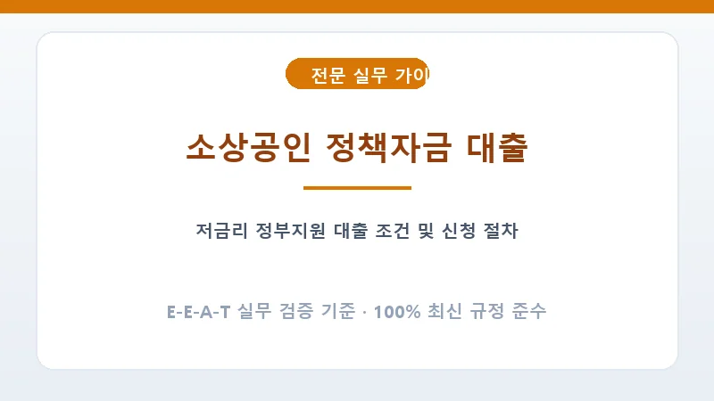

중소벤처기업부와 소상공인시장진흥공단에서 집행하는 정책자금은 시중은행 대출보다 금리가 2~3%p 이상 저렴하고 거치 기간(2~5년)이 길어 초기 창업자나 경영 위기 자영업자에게 필수적인 자금줄입니다.
직접대출 외에 대리대출은 지역신보의 보증서 발급이 필수입니다. 매출 실적 증빙(부가세 과세표준증명원), 연체 이력 부재, 사업장 임대차계약서가 정확해야 보증 한도가 높게 산출됩니다.
A. 저신용 소상공인을 위한 특례보증이나 재도약지원자금 등 신용평점 NCB 744점(구 6등급) 이하 전용 정책상품이 별도로 운영됩니다.
A. 매분기 초(1월, 4월, 7월, 10월) 소상공인정책자금 홈페이지(ols.semas.or.kr)에서 온라인 선착순 접수가 진행되므로 사전 공고 확인이 필수입니다.